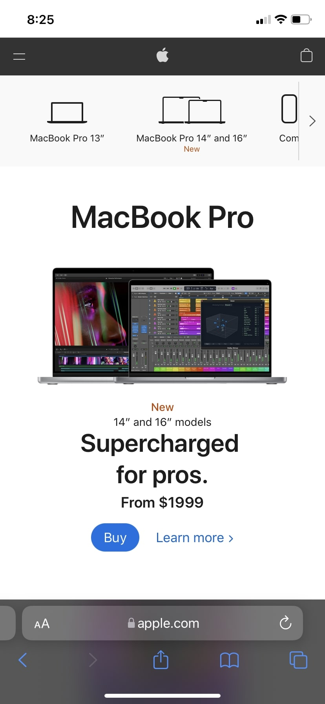

The Church of Jesus Christ of Latter-Day Saints
churchofjesuschrist.orgThis website shows alignment becasue all elements found in this website are somehow in order.
Youtube
youtube.comAll youtube uses the principle of repetition. All the time we find the same design. The only change is the content that each video has.
Apple
apple.com The apple website uses many principles but the one that I will talk about is proximity. The best example can be the apple store where we can find related items we may be interested to buy.